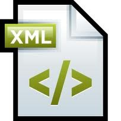

- Programación
- Base de Datos
- Entornos
- Sistemas
- Inglés
| Leguaje de Marcas | Asignaturas de primer curso | ||||
|
HTML:Lenguages basico para la creacion de las paginas web | ||||
|---|---|---|---|---|---|
| CSS: Lenguaje para aplicar estilos a letras, colores, bordes, etc. | |||||
|  | XML: Lenguaje para marcado genérico. | ||||
|
Otras materias de primero:
|
VEN AL INSTITUTO | |||